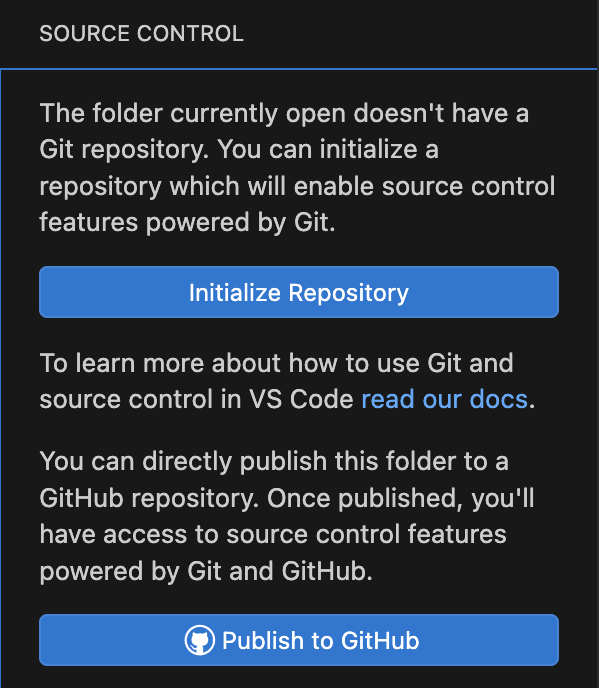
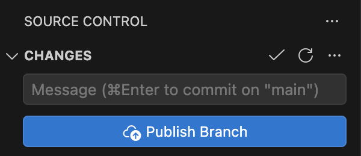
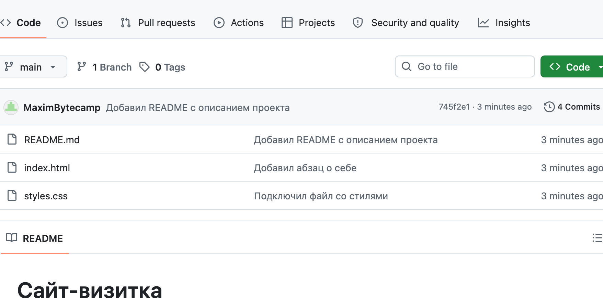
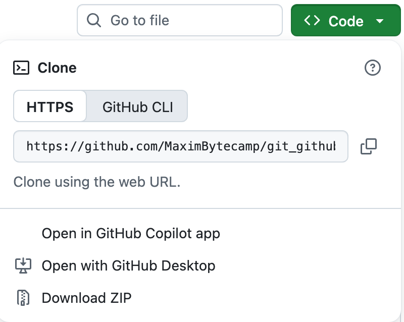
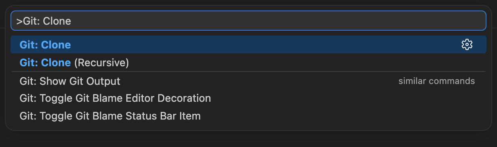
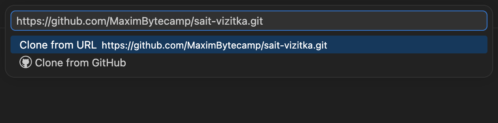
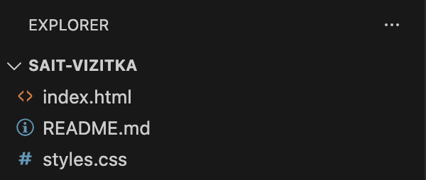
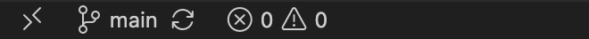
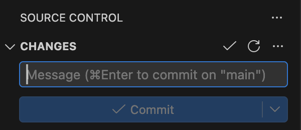

Справочник по Git и GitHub · модуль 2 · первый репозиторий в VS Code
Глава 2.2
Свой проект и чужой:
init и clone
Репозиторий появляется у вас одним из двух способов, и глава проходит оба подряд. Сначала короткий путь А: своя папка превращается в проект с историей. Потом путь Б по шагам: адрес чужого проекта на GitHub, палитра команд, вставка адреса, открытая копия со всей историей. После каждого шага показан кадр экрана.
- Категория
- Начало работы
- Уровень
- Начальный
- Что получится
- Свой репозиторий и клон чужого проекта на диске
- Сколько занимает
- Около пятнадцати минут за компьютером
§1Две ситуации, других не бывает
Работа над проектом начинается либо с пустой папки, либо с чужого готового кода. Git отвечает на это двумя разными действиями: одно создаёт историю, второе скачивает существующую.
Путь А · проект начинаете вы
Кнопка Initialize Repository заводит историю прямо в вашей папке.
- История пустая: коммитов ноль
- Интернет не нужен
- На GitHub ничего пока нет
Путь Б · проект уже существует
Команда Git: Clone скачивает проект целиком: файлы, коммиты, ветки и адрес сервера.
- История приходит вместе с файлами
- Нужен интернет и адрес репозитория
- Связь с сервером настроена сразу
Зачем это нужно в работе
- Приход на готовый проект. Первое, что делают на новом месте, — клонируют репозиторий команды. Скачанная папка сразу знает, куда отправлять правки.
- Своя разработка с первого дня. Репозиторий заводят не в конце, когда «уже есть что сохранять», а сразу: иначе первые дни работы останутся без истории.
- Чужой код для изучения. Клонирование даёт не только текущие файлы, но и переписку изменений: видно, как проект пришёл к нынешнему виду.
- Копия на другом компьютере. Тот же проект дома и на работе — это два клона одного репозитория, а не две папки, которые вы переносите флешкой.
§2Путь А, шаг 1. Завести репозиторий в своей папке
Что делаем. Создаём пустую папку проекта и открываем её в VS Code: File → Open Folder. Затем панель Source Control — CtrlCmd + Shift + G.

Нажимаем Initialize Repository. Подтверждать ничего не нужно, панель меняется сразу:

main. История заведена и пока пуста.Что делать дальше — создать файл, подготовить его и сделать первый коммит — разобрано по шагам в главе 2.1. Здесь важен только сам момент появления репозитория.
Вторая кнопка, Publish to GitHub, делает то же самое и сразу создаёт репозиторий на сайте. Ей пользуются, когда проект с самого начала общий; для учебной работы удобнее сначала завести историю у себя, а публиковать позже — это модуль 4.
Имя первой ветки подставляет Git. До 2020 года везде стояло master, затем GitHub и вслед за ним Git перешли на main — поэтому в старых проектах встречается прежнее имя. Задаётся настройкой из главы 1.3: git config --global init.defaultBranch main.
§3Путь А, шаг 2. Проверить, что появилось на диске
Внешне ничего не изменилось: в проводнике папка выглядит так же. Появилась скрытая папка .git — её видно командой, показывающей скрытые файлы:
. .. .git
Точка и две точки — это сама папка и родительская, они есть везде. Третья строка новая. Внутри неё:
Содержимое .git сразу после Initialize Repository
Разбирать содержимое сейчас не нужно. Важно одно: история проекта лежит здесь, а не на сайте и не в редакторе. Скопируете папку проекта на флешку — история поедет вместе с ней.
Состояние нового репозитория словами самого Git:
On branch main No commits yet nothing to commit (create/copy files and use "git add" to track)
Три факта в четырёх строках: ветка называется main, коммитов ещё нет, отслеживать нечего. Ровно это же показывает пустая панель Source Control — просто короче. На этом путь А закончен; дальше начинается второй.
§4Путь Б, шаг 1. Скопировать адрес проекта
Клонировать будем учебный проект sait-vizitka — сайт-визитка из трёх файлов с короткой историей. Он открытый, качать его может кто угодно.
Для клонирования нужен адрес репозитория. Он не берётся из адресной строки браузера — там ссылка на страницу. Настоящий адрес лежит под зелёной кнопкой Code на странице проекта.


sait-vizitka. Вкладка HTTPS, поле с адресом, справа значок копирования — нажимаем его.Скопировался адрес, заканчивающийся на .git:
Отличается одним окончанием. Git принимает и ссылку без .git — сам достроит, — но копировать надёжнее из того поля, где адрес дан целиком.
§5Путь Б, шаг 2. Вызвать команду Git: Clone
Что делаем. Открываем палитру команд: CtrlCmd + Shift + P. Начинаем набирать Git: Clone — список сам сузится до двух пунктов.

То же самое делает кнопка Clone Repository на стартовом экране пустого окна VS Code — если ни одна папка не открыта, проще нажать её.
§6Путь Б, шаг 3. Вставить адрес
Что делаем. Выбираем пункт Git: Clone — поле сменится на «Provide repository URL». Вставляем скопированный адрес и нажимаем Enter.

§7Путь Б, шаг 4. Выбрать папку и открыть проект
Что делаем. Откроется окно выбора папки. Выбираем папку, в которой появится проект: сама папка проекта создастся внутри и получит имя репозитория. Заводить её заранее не нужно.
Когда загрузка закончится, VS Code спросит, открыть ли скачанный проект. Нажимаем Open — и в проводнике появляются файлы:

index.html, README.md, styles.css. Ровно те же три файла видны на странице проекта на GitHub.В строке состояния сразу видна ветка и значок обмена с сервером:

Панель Source Control при этом пустая, и это правильно: вы ничего не меняли, папка совпадает с последним коммитом.

§8Путь Б, шаг 5. Убедиться, что пришла история
Что проверяем. Главное отличие клона от скачанной папки — вместе с файлами приехали все прошлые версии. Это видно двумя командами в терминале проекта.
745f2e1 Добавил README с описанием проекта 8da3e92 Добавил абзац о себе 8e377ad Подключил файл со стилями 934282c Первая страница сайта
Четыре строки — четыре версии проекта, снизу вверх от самой первой. Слева короткое имя коммита, справа пояснение автора. Все они лежат у вас на диске и открываются без интернета: видно, что сайт начинался с одной страницы, потом к нему подключили стили, затем добавили абзац и описание.
origin https://github.com/MaximBytecamp/sait-vizitka.git (fetch) origin https://github.com/MaximBytecamp/sait-vizitka.git (push)
Адрес сервера записан под коротким именем origin. Именно поэтому в строке состояния появились стрелки обмена: клон знает, откуда он взят. Две строки вместо одной — потому что адрес получения и адрес отправки разрешено делать разными; в обычном проекте они совпадают.
main создана, но пустаяorigin прописан, ветка main стоит на последнем коммитеАссоциация: два способа получить тетрадь
Вы берёте чистую тетрадь и начинаете писать с первой страницы. В ней пока ничего нет, но дальше каждая запись будет датирована и подписана вами.
Вам отдают точную копию чужой тетради: все прошлые записи на месте, вместе с датами и почерком авторов. Можно листать назад и дописывать своё в конец.
Где не совпадаетКопия тетради живёт отдельно от оригинала, а клон помнит адрес, откуда взят: он умеет забирать чужие новые записи и отправлять ваши обратно. Обмен не происходит сам — его запускают кнопкой, и об этом модуль 4.
Скачивается не только текущая версия файлов, но и все прошлые состояния. У учебного проекта из трёх файлов папка .git занимает около 120 КБ — больше, чем сами файлы. У рабочих проектов с многолетней историей она бывает в разы тяжелее рабочих файлов, и это нормально.
§9Clone или Download ZIP
В том же меню под кнопкой Code есть пункт Download ZIP. Он скачивает файлы — и только их.
Download ZIP
Архив с файлами последней версии.
- Истории нет — папки
.gitв архиве не будет - Вернуться к прошлой версии нельзя
- Отправить правки автору нельзя
- Обновить до новой версии — только скачать архив заново
Clone
Полноценный репозиторий на вашем диске.
- Все версии и ветки доступны сразу
- Обновление — одна кнопка, а не повторное скачивание
- Свои правки можно предложить автору
- Панель Source Control работает
Архив уместен, когда нужен разовый образец — шаблон, пример вёрстки, набор картинок. Во всех остальных случаях клонируют: скачанный ZIP через неделю превращается в устаревшую папку, о происхождении которой никто не помнит.
§10Где можно ошибиться
Четыре ситуации, которые случаются на первой неделе. Все четыре Git показывает явно — надо только прочитать сообщение.
Репозиторий внутри репозитория
Вы клонировали проект, зашли в его папку и по привычке нажали Initialize Repository в подпапке. Получились две истории, вложенные друг в друга: внешняя видит подпапку как один непонятный объект, внутренняя живёт сама по себе.
Initialized empty Git repository in /Users/vy/proba-git/vnutri/.git/
Git не возражает — такое бывает нужно, — но в учебной работе это всегда ошибка. Лечится удалением лишней папки .git из подпапки. Признак в панели: файлы подпапки перестают появляться в списке изменений.
init поверх готового репозитория
Повторное нажатие в той же папке ничего не ломает и историю не стирает:
Reinitialized existing Git repository in /Users/vy/proba-git/.git/
Слово Reinitialized вместо Initialized — единственное отличие. Коммиты на месте.
Клонирование в непустую папку
Если папка с таким именем уже есть и в ней что-то лежит, Git отказывается:
fatal: destination path 'sait-vizitka' already exists and is not an empty directory.
Это защита: иначе клон затёр бы чужие файлы. Выберите другое место или укажите другое имя папки последним словом команды.
Репозиторий в облачной папке
Проект, заведённый внутри синхронизируемой папки — iCloud Drive, Google Drive, OneDrive, — рано или поздно ломается. Облако синхронизирует служебные файлы .git по своим правилам и в свой момент; два компьютера, пишущие в одну историю одновременно, приводят к повреждению репозитория. Для синхронизации между машинами используется сам GitHub — он для этого и сделан.
Проверка после создания или клонирования
main. Если имени нет — репозитория в этой папке нет.Documents и не имя пользователя.git log --oneline показывает чужие коммиты, а в строке состояния стоят стрелки обмена.§11Словарь главы
Четыре слова, которые встретились по ходу и дальше будут в каждой главе.
| Слово | Что это | Где встречается |
|---|---|---|
| init | Завести историю в своей папке: создаётся .git | Кнопка Initialize Repository, команда git init |
| clone | Забрать чужой репозиторий вместе с историей | Команда Git: Clone в палитре, git clone адрес |
| remote | Копия проекта на сервере, с которой идёт обмен | Появляется у клона; своему репозиторию не обязательна |
| origin | Короткое имя основного адреса, чтобы не писать ссылку целиком | git remote -v, кнопки Push и Pull |
§12Частые вопросы
.git на вашем компьютере. На сайте ничего не появится, пока не нажата Publish to GitHub или не настроена отправка.origin и умеет обмениваться коммитами..git, проект сломается.§13Проверьте себя
Вам дали ссылку на проект в чате. Что вы сделаете, чтобы начать работать?
Открою страницу проекта, нажму Code, скопирую адрес из поля HTTPS. В VS Code — палитра команд, Git: Clone, вставить адрес, выбрать папку, в которой появится проект, и открыть его. После этого в папке есть файлы, вся история и настроенный origin.
Чем состояние папки после Initialize Repository отличается от состояния после клонирования?
После init история пустая: ветка main создана, коммитов ноль, удалённой копии нет, внизу окна значок облака. После клонирования на диске лежат все коммиты проекта, ветка стоит на последнем из них, адрес записан под именем origin, а внизу окна стрелки обмена.
Почему не стоит скачивать проект через Download ZIP, если планируете его дорабатывать?
В архиве нет папки .git, а значит нет истории: нельзя посмотреть прошлые версии, откатиться, увидеть автора строки. Нельзя и обновиться — только скачать архив заново и вручную разобраться, что изменилось. Отправить свои правки автору тоже не получится.
В ответ на команду Git написал Reinitialized existing Git repository. Что произошло и опасно ли это?
Репозиторий в этой папке уже был, и вы завели его повторно. Не опасно: коммиты, ветки и настройки остались на месте. Слово Reinitialized — уведомление, что папка .git не создавалась заново.
Коллега держит проект в папке Google Drive и жалуется, что Git «сходит с ума». В чём причина?
Облако синхронизирует служебные файлы .git само по себе и в неподходящий момент, а при работе с двух компьютеров — ещё и одновременно. Репозиторий от этого повреждается. Синхронизировать проект между машинами нужно через GitHub: клон на каждом компьютере плюс обмен коммитами.
Что такое origin своими словами?
Короткое имя для адреса удалённой копии проекта. Не папка и не команда — закладка, чтобы не писать длинную ссылку каждый раз. При клонировании Git создаёт её сам, посмотреть адрес можно командой git remote -v.
§14Шпаргалка по главе
File → Open Folder
Initialize Repository
git init
кнопка Code → HTTPS → копировать
палитра: Git: Clone
git clone адрес
.git — история проекта
ветка main
origin — только у клона
git status — состояние
git log --oneline — история
git remote -v — адрес сервера
init в домашней папке
init внутри чужого репозитория
репозиторий в облачной папке
ZIP — файлы без истории
клон — файлы и вся история
Итог главы
Путь А: открыть папку, нажать Initialize Repository — появляется .git и ветка main, история пустая, сервер не задействован. Путь Б: скопировать адрес под кнопкой Code, вызвать Git: Clone, вставить адрес, выбрать папку — на диске оказывается проект со всеми коммитами и записанным адресом origin. Архив ZIP выглядит похоже, но истории не содержит, поэтому для работы не годится. Заводить репозиторий нужно в папке конкретного проекта — не в домашней, не внутри другого репозитория и не в облачной. В следующей главе разберём, что происходит между правкой файла и коммитом: зачем нужен второй шаг с отбором изменений.
- Кадры VS Code сняты на учебных проектах этой главы: пустая папка
proba-gitи клон проектаsait-vizitka. Ответы команд получены в Git версии 2.51.1. - Учебный репозиторий для клонирования — github.com/MaximBytecamp/sait-vizitka: страница одного сайта и четыре коммита.
- Поведение
git initиgit clone— документация git-init и git-clone. - Команда
Git: Cloneи стартовый экран — документация VS Code, раздел Source Control. - Переход на имя ветки
main— объявление GitHub о переименовании ветки по умолчанию.